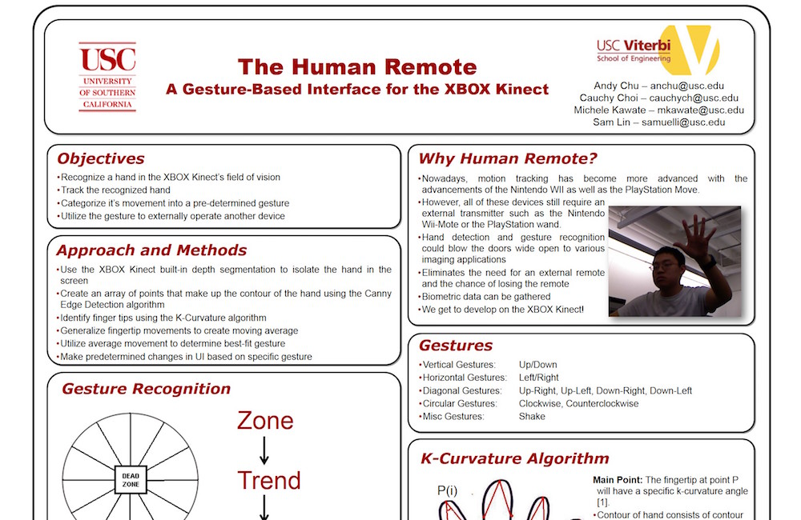

USC Viterbi
Undergrad/Grad Student
Class of 2011 and Class of 2012

I graduated in 2011 with my bachelor’s degree in Biomedical Engineering with a minor in Political Science, concentrating on law and public policy, while meeting the academic standard for the full-tuition merit-based Trustee Scholarship.
I graduated again in 2012 with my master’s degree in Biomedical Engineering, focusing on device development through USC’s Progressive Degree Program.
Some of the stuff I worked on:
as a graduate student, studied the kinematics of reaching in pediatric patients from CHLA with motor-disabilities under Professor Terry Sanger and Dr. Matteo Bertucco
as a capstone project, designed an award-winning gesture-based "Human Remote" user interface using the Xbox 360 Kinect and LabVIEW development platforms
as a capstone project, collaborated on and presented a proposal for an ultrasound navigation device for the blind to a panel of angel investors
played flute/piccolo in the Spirit of Troy, USC's Trojan Marching Band